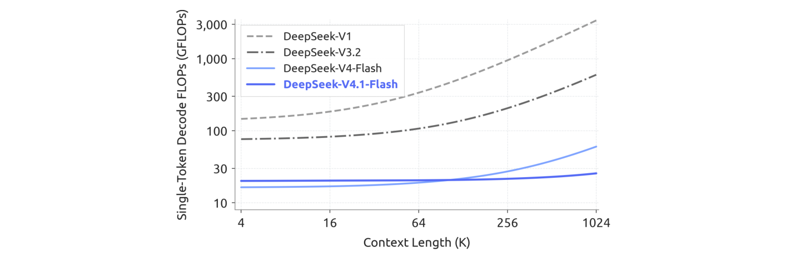
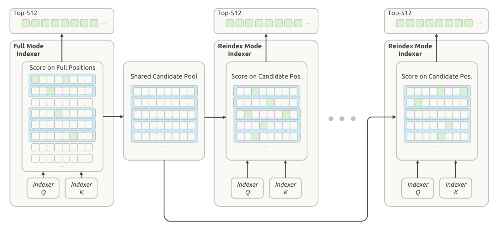

长程agent把模型负载推向输入密集型：prefill依旧昂贵，庞大的KV cache持续压迫HBM、SSD容量与数据传输带宽。这篇只覆盖DeepSeek-V4.1-Flash技术报告的前两章，引言与架构。
结论先放这里：它是一个多模态MoE模型，552B主干参数、原生100万token上下文；CED架构让prefill每token只激活8B参数、decode激活16B；全局KV cache压到890字节/token，约为DeepSeek-V4-Flash的1/4。
DeepSeek-V4把全局注意力分支与局部滑动窗口注意力（SWA）结合：全局分支维护main KV与indexer K，SWA维护局部KV状态。固定窗口下SWA的存储与序列长度无关，于是超长序列下全局KV成为运行时KV占用的主体、受限于HBM容量；另一部分为前缀复用而持久化的KV受SSD与主机内存约束；I/O与互连带宽还会限制缓存的迁移和加载。这些约束共同压低服务吞吐、抬高部署成本，最终妨碍agent走向更长的任务与更广的场景。
V4.1-Flash在三个层面同时下手：架构上设计CSA2做跨层复用，精度上把全局KV换成FP4，部署上引入SWA Bounded Replay。论文把DeepSeek-V4视作一个以SWA为局部处理主干、外挂压缩全局上下文的模型，因此这一代的思路是简化全局分支、基本保留局部注意力设计。
效果可以量化为两个数字：全局KV cache约1/4（890字节/token，相比最早的DeepSeek-V1减少约437倍），持久KV cache约1/8。同时模型性能不降反升：在同等序列长度下，它只需要约1/4的运行时KV存储和1/8的持久KV存储。
预训练方面，模型在包含45T token的多模态语料上训练，稀疏注意力从64K序列长度直接从头训练、没有任何稠密注意力预热阶段，训练完成后原生具备多模态能力与1M上下文。评测中，DeepSeek-V4.1-Flash-Base在世界知识、推理与编码能力上和DeepSeek-V4-Pro-Base相当，并在留出评测上带来5% 到10% 的提升，而只用了约1/3的总参数和1/4的激活参数。
能力画像有三个看点。推理上，它在数学、竞赛编程等推理密集基准上保持高准确率，与Kimi-K3、DeepSeek-V4-Pro等顶级开源模型相当。Agent上，它在Terminal-Bench 2.1、DeepSWE v1.1、AutomationBench等标准agent基准上达到闭源前沿模型的水平，足以承担日常编码与白领工作流，但在需要专家级领域知识的科学型agent任务（如Terminal-Bench 4.0）上仍与巨型模型有差距。多模态上，它在视觉推理与专业图表解读上超过Kimi-K3这类开源对手，并能在前端开发、办公自动化等真实视觉agent工作流里利用渲染截图做视觉检查与自我纠错，不过相比巨型闭源系统仍有整体差距。
后训练没有任何算法创新：配方就是标准的监督微调（SFT）、强化学习（RL）再加on-policy蒸馏（OPD），与DeepSeek-V4一致，所有实质变化都在数据管线里：大规模自动化的数据合成与环境构建，并逐步放大RL阶段的数据、任务与rollout。论文的结论是，V4.1-Flash已能在绝大多数基准上对标闭源前沿模型，可完成95% 以上的真实任务，同时小激活量带来低延迟与低服务成本，是一个能力与效率之间相当均衡的选择。

模型是一个多模态MoE Transformer，输入图像与文本、自回归生成文本。语言主干由40个因果Transformer层组成，组织为20层因果编码器加20层解码器；除最前两层只用滑动窗口注意力（SWA），其余每层都同时包含全局注意力与SWA。视觉编码器与一个MLP投影器把图像转成视觉嵌入，与文本嵌入一起处理，多模态数据从语言模型预训练一开始就进入。整体上，主干552B参数、Engram 196B参数，每token激活参数在prefill阶段为8B、decode阶段为16B。
CED与CSA2解决的是长上下文推理里互补的两类开销：CED用编码器输出构造解码器的全局KV cache，让大部分提示token跳过完整的解码器计算，同时保留逐层的滑动窗口注意力，prefill计算量近乎减半；CSA2则跨层共享全局KV以减少缓存存储、并复用稀疏选择以减少索引工作量。解码器里还有分层稀疏索引器，把后续索引器限制在前一层索引器选出的候选池内，进一步减少每个query需要打分的条目数。

细节上，模型保留DeepSeekMoE的共享专家与细粒度路由专家，并为图像与文本token引入模态特定的负载均衡；Single-Pass mHC改写残差流混合以便更高效地做kernel融合，Engram增加稀疏访问的条件记忆；主干预训练阶段不用MTP模块，投机解码改用DSpark（在主干预训练之后单独训练）；主KV cache压缩到FP4以进一步降低存储。
多模态输入通路由视觉编码器与MLP投影器组成：视觉编码器对每张图产出空间网格特征，先做3×3像素反混洗（沿通道维重排局部邻域以降低空间分辨率），再由MLP投影到语言主干的隐藏维度，最后把视觉嵌入插入输入序列对应的图像token位置，与文本嵌入一起由语言主干处理。
团队从头训练了视觉编码器DeepSeek-ViT：以ViT为基础，为支持任意分辨率把绝对位置嵌入换成2D-RoPE；为与LLM设计对齐、并兼容Muon优化器，把patch embedding的卷积换成线性投影；归一化用RMSNorm、激活用SwiGLU；送入LLM前做3×3下采样的像素反混洗，把视觉token数降到1/9，可支持到约1344×1344像素的输入。
图像与文本的表示分布不同，在MoE里可能引发不同的专家路由偏好，若只看总体负载就会掩盖模态内的不均衡。为此团队把无辅助损失的负载均衡扩展到为文本与图像token分别维护专家级修正偏置：路由时每个token用自己模态的偏置做专家选择，权重仍按原始路由分数计算；每步训练后两组偏置各自按本模态的专家负载独立更新。
Agent工作流里频繁的工具调用会制造大量prefill请求，一旦KV cache未命中，计算开销就非常可观。受YoCo启发（让上半部分层直接共享下半部分层生成的KV cache），CED把Transformer底部一半层当作因果编码器：上半部分层（解码器）的KV项不再来自各自隐状态，而是用逐层投影权重直接从第L/2层的隐状态投影得到。
这样一来，prefill阶段只需计算前一半层，就能以极低的计算量得到上层所需的全局KV cache，整体prefill计算量几乎减半：序列长度远大于窗口时，复杂度从O(N·L) 降到约O(N·L/2)。
滑动窗口注意力则保留逐层计算：每一层的局部键值都直接来自当层隐状态，这实际上加深了局部KV生成的计算深度。代价是解码器需要一个SWA重放过程，prefill时要多处理约「窗口大小 × L/2」个token，这在每轮提示都很短的多轮交互中不可忽视。已有工作表明SWA的实际有效感受野远小于理论值，于是论文引入Decoder SWA Bounded Replay：只对提示最后一段（一个窗口长度）的token做prefill来计算SWA，把这份额外开销显著压下去。
服务长上下文要同时控制KV存储与注意力计算，而这两项成本可以沿三个乘性维度压缩：条目大小（GQA降低KV头数、MLA让各头共享小型潜向量）、序列维度（每m个token压成一条目，如DeepSeek-V4的CSA与HCA）、以及层维度（一部分层直接复用其他层的缓存与选择，或被更高效的层替代）。已有工作证明层维度压缩有效：IndexCache跨层复用Top-K索引、YOIO只算一次稀疏路由供所有层共享、HySparse让稀疏层复用稠密层KV：但索引复用并不节省main KV存储，全局路由共享限制性能，混合设计仍保留全注意力层，而且没有一种方法同时覆盖三个维度。
CSA2的做法是把三个维度联合起来：跨层共享main KV与indexer K，同时允许层复用Top-K索引，并把「缓存共享」与「索引复用」解耦。相对CSA它做了两处简化：压缩器去掉了相邻压缩条目之间重叠的源条目和绝对位置编码，indexer K改为直接由main KV投影得到（而不是另走一条从隐状态出发的压缩路径）。这两处既简化实现也提升训练效率。每个query会关注被选中的条目，加上该层本地的SWA KV。
CSA2的每一层会被静态指定为三种模式之一。Full模式：自己计算main KV与indexer Q，从main KV投影出indexer K，跑索引器产出全新的Top-K索引，责任与DeepSeek-V4里完整的CSA层一致。Reindex模式：复用前一层最近的main KV与其indexer K，但索引器用自己的query重新打分、产出新的Top-K，让稀疏选择可以逐层变化而KV保持共享。Reuse模式：同时复用最近的main KV和上一层算出的Top-K索引，直接做注意力，不再计算indexer Q、也不评估索引分数，因此开销最低。三种模式都保留各自的全局Q与SWA KV。

论文特别指出，与DeepSeek-V4采用的CSA加HCA混合架构不同，DeepSeek-V4.1-Flash用的是纯CSA2。
跨层索引复用减少了索引器求值次数，但剩下的索引器仍要在全部因果可见上下文上打分，超长上下文下这依然是主要瓶颈。既然解码器里较浅层索引器的信息可以自然用来限制更深层索引器的候选范围、且不引入额外状态，论文提出了分层稀疏索引器（Hierarchical Sparse Indexer），只用在CED的解码器里以降低解码期重复打分。
对每个query，第一个处于Full模式的层会构造一个候选池，后续需要重索引的层就在这个池内搜索。具体做法是：该层先给全部因果可见位置打分、产出自己注意力所需的Top-K索引；同时做块级候选选择：每个块取块内位置的最大索引分数，选出分数最高的若干块，把这些块覆盖的位置收进候选池（池比最终Top-K集合更大）。论文给的例子是选2048个块、每块8个位置，得到16384个候选位置。
后续Reindex模式的层只在候选池内打分、在池内选出自己的Top-K；Reuse模式的层不做新索引，直接用最近一次针对所复用KV算出的Top-K。于是候选池在索引层之间共享，最终选择却可以各不相同。

机制的关键收益是：候选池大小固定时，每个后续索引器对每个query打分的位数与上下文长度无关（第一个Full层仍要扫描整个因果可见范围），代价从随上下文长度线性增长变为常数。这个机制是训练感知的，并且在后训练阶段引入：训练与推理施加完全相同的候选限制，保证深层索引器是在与推理一致的搜索域下被优化的。
Single-Pass mHC。DeepSeek-V4引入的mHC会在相邻Transformer块之间维持多条残差流。理想情况下两块之间的残差变换是一次读写的完整映射，激活访存下界是 (2n+2)d；但DeepSeek-V4的实现分三个kernel顺序执行（残差更新、系数预测、输入混合），总访存达到 (4n+4)d，是下界的两倍，原因是输入混合用到的系数要等整个隐藏维度的归约完成才可用。Single-Pass的做法是把输入混合的系数整体后移一个块：每个块改用上一块产出的系数，依赖就消失了，而性能损失可以忽略。部署时把残差更新、输入混合、系数预测融合成一个Mega-mHC kernel，实现理想的 (n+1)d读与 (n+1)d写，把激活访存减半。
Engram。这是一个把「记忆」与「计算」解耦的条件记忆模块，沿用此前的设计（分词压缩、多头哈希、上下文感知门控、多分支集成），但去掉因果短卷积，并把嵌入表优化换成动量更新加Sinkhorn平衡。196B参数平均分给两个模块，每个模块使用2、3、4阶N-gram，8个哈希头，每个阶的嵌入维度2048，每个头索引约1600万条目的表（表大小取互不相同的质数），嵌入表与键值投影都用FP8。两个模块放在第1、14层以平衡各训练流水线阶段的内存占用；推理时确定性寻址让嵌入可以通过后台RDMA从主机内存预取，第一个模块的预取还能与第一个Transformer块的计算重叠。
DSpark。这是投机解码模块，把半自回归草稿与置信度调度的验证结合起来：草稿器由三个滑动窗口128的Transformer块组成，一次前向并行算出5个草稿位置的基础logits，一个轻量Markov头建模草稿token之间的依赖，一个置信头预测每个位置的条件接受概率并估计前缀存活概率；调度器再结合这些估计与实测的引擎吞吐曲线，为每个请求动态选择验证长度，目标是在当前系统负载下最大化整机token吞吐。与DeepSeek-V3里在预训练全程联合训练的MTP不同，DSpark放在预训练之后的专门阶段训练（冻结主干），后训练期间继续训练但不把梯度回传主干。
FP4主KV cache。DeepSeek-V4已对FP4的索引器query/key做量化感知训练，现在把QAT扩展到主KV cache，这里FP4的作用是省存储而非加速矩阵乘：注意力前先反量化，就能用更精确的格式而不必要求硬件原生支持该格式的矩阵乘。格式选了OCP标准的MXFP4以兼容尽可能多的硬件平台，具体采用E2M1加每16通道一个E4M3 scale（参照NVFP4，但省掉第二级全局scale）。省掉这一级也足够：该格式支持的量级上限达448×6=2688，远超缓存本身的幅度上界：RMSNorm权重幅度上限约1，做RMS归一化后512通道KV潜向量的L2范数至多约 √512，RoPE保持范数不变，因此旋转后各通道绝对值上界约22.6，训练中观测到的最大幅度也只在10左右。量化在RoPE之后进行，SWA KV因对量化敏感而保留FP8；相比DeepSeek-V4的FP8主KV，这一格式在HBM和卸载到SSD时都把存储占用几乎减半。
在DeepSeek-V4的优化配置基础上，这一代做了两处针对性调整。第一处是head-wise Muon：对Query权重按头拆分后再施加Muon更新。Muon可以看作预条件梯度下降，原始Muon对所有头共用同一个预条件子，而按头拆分能给不同头不同的预条件子，更好地处理注意力头之间的异质性，实测优于原始Muon：GLM 5与Kimi-K3也验证了这一点。
第二处针对Engram参数：如果对新引入的Engram参数用Adam，优化器状态的内存占用会大幅增加。为降低训练内存，论文改用「动量更新 + Sinkhorn平衡」来优化Engram嵌入表、token嵌入与预测头。Sinkhorn平衡此前被用于SinkGD里的线性层权重矩阵，这里扩展到这些大型参数矩阵：和Muon一样只需要一份动量缓冲，实测却优于Adam。
整体配置上，归一化层权重以及其他非矩阵参数（偏置、缩放因子）继续用AdamW；语言模型主干线性变换、Engram投影层与视觉语言投影器的权重矩阵用Muon，其中Query与Key权重走head-wise Muon；Muon加了去耦权重衰减与Nesterov动量，归一化层权重也参与权重衰减，偏置与缩放因子不参与，Sinkhorn平衡更新同样用Nesterov动量但不做权重衰减。预训练期间视觉编码器保持冻结（其最后一层归一化与视觉语言投影器仍可训练），直到学习率衰减阶段开始才解冻，并以更小的学习率与语言模型联合优化。
参考：https://huggingface.co/deepseek-ai/DeepSeek-V4.1-Flash/resolve/main/DeepSeek_V41_Tech_Report.pdf